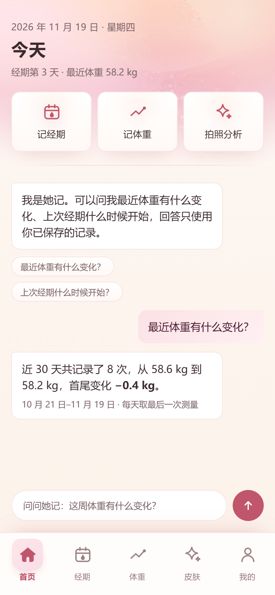

以业务为起点的页面拆分：一级页只负责“看今天”和“给入口”，录入用半屏不跳页，历史 / 明细 / 解释 / 设置各自独立成页。视觉沿用蜜桃奶油素材版，保留渐变、纸感卡片与插画头像。
每天打开的第一屏，只回答“今天怎么样、要记什么”。
1 屏一条主线：先看状态与日历，再补当天记录，最后回看历史与预测。
5 屏只记录与呈现，不评价单次涨跌。
4 屏一条“拍—看—存—比”的链路，任何一步都可退出且不产生记录。
5 屏账号资料与边界说明，不放业务数据。
4 屏进入应用前的两道门，注册成功回登录。
2 屏